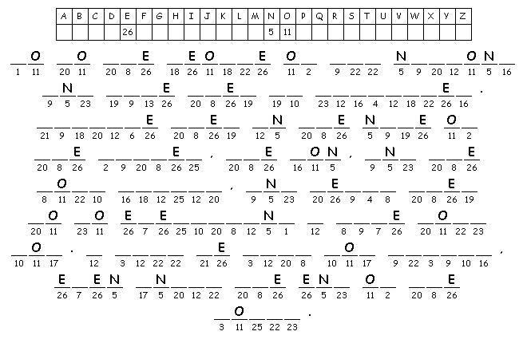

This week's lessons: Genesis 1:1-2:4a, Psalm 8, 2 Corinthians 13:11-13, Matthew 28:16-20
This
week's lessons: Genesis
1:1-2:4a, Psalm
8, 2
Corinthians 13:11-13, Matthew
28:16-20
Elementary School Pew-work
Matthew 28:19-20

Created by Puzzlemaker at DiscoverySchool.com
What
four things does Jesus tell the disciples to do in verse 19 and 20?
1.
______________________________________________________________________
2.
______________________________________________________________________
3.
______________________________________________________________________
4.
______________________________________________________________________
G N I H T Y R E V E L E V E N E R E H W O R S H I P P E D I M S Y T I R O H T U A W E N T O M O U N T A I N A T I O N S S E D I S C I P L E S U S E J |
AUTHORITY DISCIPLES ELEVEN EVEN EVERYTHING JESUS MOUNTAIN NATIONS SOME WENT WHERE WORSHIPPED
|
|
Created by Puzzlemaker at DiscoverySchool.com |
|
Next week: Genesis 6:9-22; 7:24; 8:14-19 and Psalm 46 or Deuteronomy 11:18-21, 26-28 and Psalm 31:1-5, 19-24, Romans 1:16-17; 3:22b-28, (29-31), Matthew 7:21-29